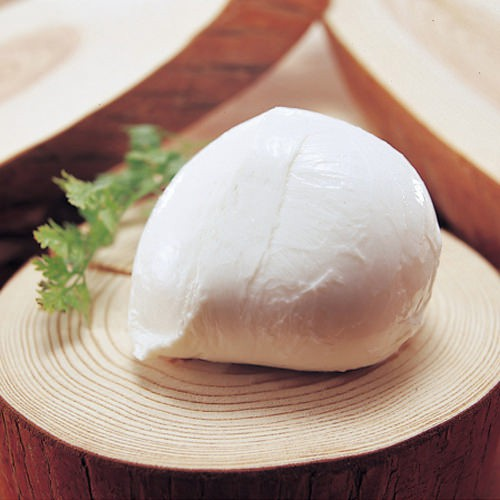

モッツァレラチーズとは？
モッツァレラチーズとは？

モッツァレラは白く丸いかたまりの形をしたチーズです。見た目は表面がツルツルと滑らかで、よく「つきたてのお餅のよう」と表現されます。押すと少し弾力があります。熱を加えるとトロリとして、モッツァレラ独特の糸引きが楽しめるので、ピザなどにもよく使われます。
原産はイタリア南西部のカンパニア州で、アルプスを源流とするポー川流域の水牛乳から作られました。 本来は濃厚な水牛乳だけで作られていましたが、現在は牛乳で作るものが多く、世界中で作られています。
モッツァレラは、そのまま食べると軽い歯ごたえと弾力を感じ、熟成させていないフレッシュタイプなので、軽くてクセのないフレッシュなやさしいミルクの甘みの味わいが特徴です。新鮮なものほどおいしいので、購入したら早めに食べましょう。 また、モッツァレラは熱を加えると非常によく伸びるので、ピザやグラタンにも手軽に使えます。